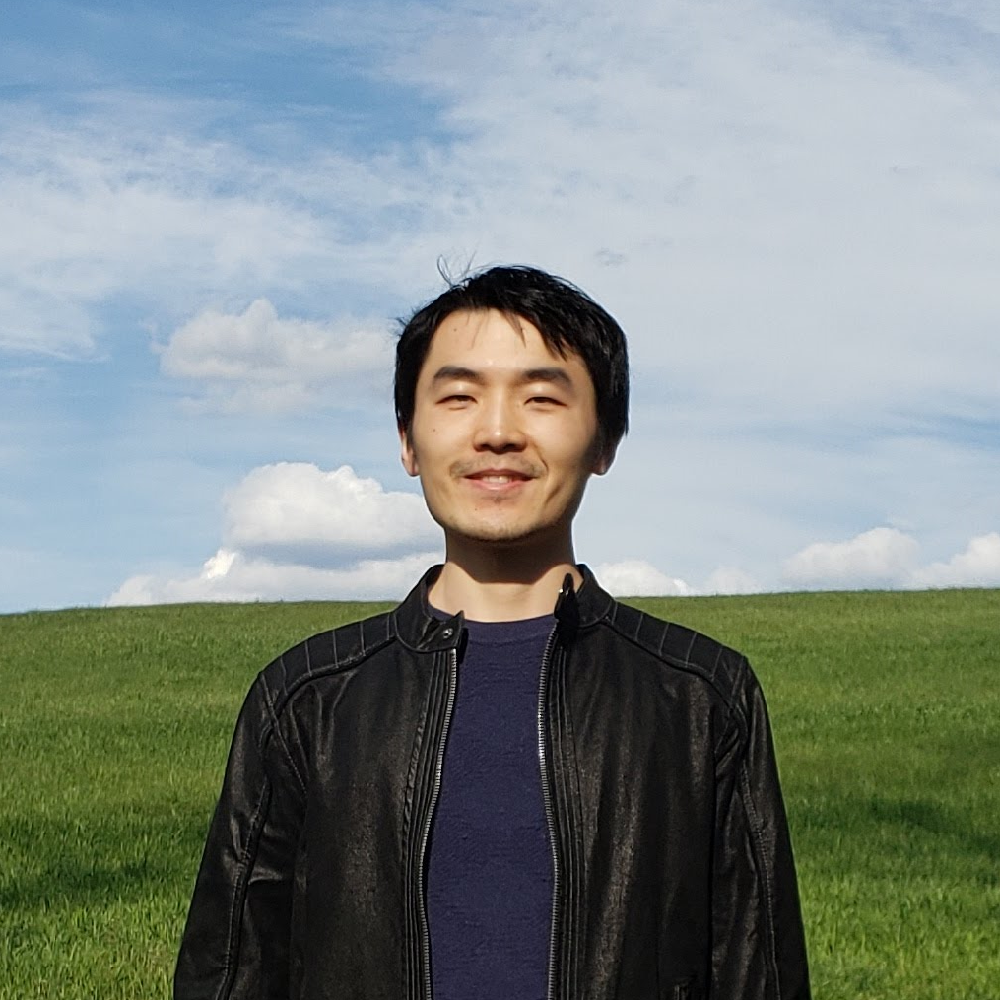

Welcome to my mathematics page.I am currently a visiting assistant professor of mathematics at the University of Mississippi. I was previously at the University of Cincinnati, Peking University, and the University of Connecticut. I received my Ph.D. from UCLA, where I was advised by Rowan Killip and Monica Visan.
As for my next destination, that remains a rather pressing open problem.
I like questions in analysis that have a strong algebraic flavor. My research areas include harmonic analysis on Lie groups, Euclidean harmonic analysis, analytic number theory, and dispersive partial differential equations. A unifying theme is understanding the concentration of Laplace eigenfunctions on manifolds.
Here is my CV.
Papers
-
Rootwise estimates for Weyl alternants
[] [ArXiv]
For a reduced crystallographic root system with Weyl group $\small W$, Weyl alternants are signed sums of exponentials indexed by $\small W$. They occur in the numerators of the Weyl character formula and the explicit formula for spherical functions on complex semisimple groups. We establish rootwise bounds that quantify cancellation in these oscillatory sums, with each positive root contributing a factor depending on both the spatial variable and the spectral parameter. More generally, we establish rootwise bounds for all mixed directional derivatives of normalized Weyl alternants. Our proof extends to arbitrary rank the descent strategy used by the second author for pointwise character bounds on $\small \mathrm{SU}(3)$. The key ingredients include the decomposition of the Weyl group into parabolic double cosets and the relative BGG–Demazure identity. For spherical functions on complex semisimple groups, these estimates recover the recent pointwise bound of Brumley, Marshall, Matz, and Peterson, and they refine the derivative bounds of Cowling and Nevo by controlling arbitrary mixed radial derivatives uniformly across spatial and spectral root hyperplanes. Furthermore, by a standard localization argument relative to the affine Weyl arrangement, we establish periodic alternant estimates for regular integral weights and corresponding rootwise bounds for all mixed radial derivatives of irreducible characters of compact connected semisimple groups.
-
Sharp bilinear eigenfunction estimate, anisotropic Strichartz estimate, and energy-critical NLS
[] [ArXiv]
We establish sharp bilinear eigenfunction estimates for the Laplace–Beltrami operator on the standard three-sphere $\small \mathbb{S}^3$, eliminating the logarithmic loss that has persisted in the literature since the pioneering work of Burq, Gérard, and Tzvetkov over twenty years ago. This completes the theory of multilinear eigenfunction estimates on the standard spheres. Our approach relies on viewing $\small \mathbb{S}^3$ as the compact Lie group $\small \mathrm{SU}(2)$ and exploiting its representation theory. Motivated by applications to the energy-critical nonlinear Schrödinger equation (NLS) on $\small \mathbb{R} \times \mathbb{S}^3$, we also prove a refined anisotropic Strichartz estimate on the cylindrical space $\small \mathbb{R}_{x_1} \times \mathbb{T}_{x_2}$ of $\small L^\infty_{x_2}L^4_{t,x_1}$-type, adapted to certain spectrally localized functions. The argument relies on multiple sharp measure estimates and a robust kernel decomposition method. Combining these two key ingredients, we derive a refined bilinear Strichartz estimate on $\small \mathbb{R} \times \mathbb{S}^3$, which in turn yields small-data global well-posedness for the above mentioned NLS in the energy space.
-
Algebraic and analytic properties of invariant differential operators on a homogeneous space of complexity 1
[] [ArXiv]
Denote by $\small \mathrm{SL}_3(\mathbb R)$ the special linear group of degree 3 over the real numbers, $\small A$ the subgroup consisting of the diagonal matrices with positive entries. In this paper we study the algebraic and analytic properties of the invariant differential operators on the homogeneous space $\small \mathrm{SL}_3(\mathbb R)/A$. Firstly, we specify the noncommutative algebra of invariant differential operators in terms of generators and their relations. Secondly, we describe the center of this algebra and prove that all of its symmetric elements are essentially self-adjoint. Thirdly, for the first time on homogeneous spaces, we identify several essentially self-adjoint invariant differential operators which do not lie in the center of the algebra of invariant differential operators.
-
Pointwise character bounds for $\small \mathrm{SU}(3)$
Bulletin of the London Mathematical Society 58 (2026), no. 10, article ID e70519, 24 pp.
[] [Journal] [ArXiv]
We present a basic pointwise bound for the irreducible characters of $\small \mathrm{SU}(3)$ and, as an application, derive new $\small L^p$ bounds for these characters. Our approach is based on the descent of characters to singular sets and the cancellation in this formula.
-
Growth of Fourier–Lebesgue norms for mKdV
Partial Differential Equations and Applications 7 (2026), no. 4, article no. 31, 21 pp.
[] [Journal] [ArXiv]
We demonstrate inflation of Fourier–Lebesgue norms for solutions to the focusing modified Korteweg–de Vries equation posed on the real line. For $\small p\neq 2$ and all $\small s\in \mathbb{R}$, we construct a sequence of solutions $\small u_n$ whose initial data $\small u_n(0)$ converges to zero in the Fourier–Lebesgue spaces $\small \mathcal{F}L^p_s(\mathbb{R})$, but whose evolutions at later times $\small t_n$ diverge to infinity.
-
Restriction of eigenfunctions on products of spheres to submanifolds of maximal flats
Proceedings of the American Mathematical Society 154 (2026), no. 9, 3921–3931.
[] [Journal] [ArXiv]
Let $\small M$ be a product of rank-one symmetric spaces of compact type, each of dimension at least $\small 3$. We establish sharp $\small L^p$ bounds for the restriction of Laplace–Beltrami eigenfunctions on $\small M$ to arbitrary submanifolds contained in a maximal flat, for all $\small p \ge 2$. The proof combines precise asymptotics of Jacobi polynomials and positivity of Fourier coefficients of spherical functions.
-
Local well-posedness for nonlinear Schrödinger equations on compact product manifolds
Journal of Differential Equations 467 (2026), article ID 114288, 25 pp.
[] [Journal] [ArXiv]
We prove new local well-posedness results for nonlinear Schrödinger equations posed on a general product of spheres and tori, by the standard approach of multi-linear Strichartz estimates. To prove these estimates, we establish and utilize multi-linear bounds for the joint spectral projector associated to the Laplace–Beltrami operators on all the individual sphere factors of the product manifold. To treat the particular case of the cubic NLS on a product of two spheres at critical regularity, we prove a sharp $\small L^\infty_xL^p_t$ estimate of the solution to the linear Schrödinger equation on the two-torus.
-
Bounds of restriction of characters to submanifolds
Mathematische Zeitschrift 312 (2026), no. 1, article no. 13, 35 pp.
[] [Journal] [ArXiv]
A fruitful approach to studying the concentration of Laplace–Beltrami eigenfunctions on a compact manifold, as the eigenvalue tends to infinity, is to bound their restriction to submanifolds. In this paper, we adopt this approach in the setting of compact Lie groups and provide sharp restriction bounds for general Laplace–Beltrami eigenfunctions, as well as for important special cases such as sums of matrix coefficients and, in particular, characters of irreducible representations. We prove sharp asymptotic $\small L^p$ bounds for the restriction of general Laplace–Beltrami eigenfunctions to maximal flats and all of their submanifolds, for all $\small p \geq 2$. Furthermore, we establish sharp asymptotic $\small L^p$ bounds for the restriction of characters to maximal tori and all of their submanifolds for all $\small p>0$, and to torus-generated conjugation-invariant submanifolds for all $\small p \geq 2$. We also obtain sharp $\small L^p$ bounds for the restriction of general sums of matrix coefficients to maximal flats and all of their submanifolds, for all $\small p \geq 2$.
-
Global well-posedness and equicontinuity for modified Korteweg–de Vries equations in modulation spaces
Pure and Applied Analysis 7 (2025), no. 3, 615–637.
[] [Journal] [ArXiv]
We establish global well-posedness for both the defocusing and focusing complex-valued modified Korteweg–de Vries equations on the real line in modulation spaces $\small M^{s,2}_p(\mathbb{R})$, for all $\small 1 \leq p <\infty$ and $\small 0 \leq s < 3/2 − 1/p$. We will also show that such solutions admit global-in-time bounds in these spaces and that equicontinuous sets of initial data lead to equicontinuous ensembles of orbits. Indeed, such information forms a crucial part of our well-posedness argument.
-
Analysis on compact symmetric spaces: eigenfunctions and nonlinear Schrödinger equations
In: Trends in Mathematics, Research Perspectives Ghent Analysis and PDE Center 3 (2024), 235–240.
[] [Book]
We discuss several open problems on harmonic analysis on compact globally symmetric spaces, and their applications towards nonlinear Schrödinger equations.
-
On Fourier restriction type problems on compact Lie groups
Indiana University Mathematics Journal 72 (2023), no. 6, 2631–2699.
[] [Journal] [ArXiv]
In this article, we obtain new results for Fourier restriction type problems on compact Lie groups. We first provide a sharp form of $\small L^p$ estimates of irreducible characters in terms of their Laplace–Beltrami eigenvalue and as a consequence provide some sharp $\small L^p$ estimates of joint eigenfunctions for the ring of bi-invariant differential operators. Then we improve upon the previous range of exponent for scale-invariant Strichartz estimates for the Schrödinger equation, and provide new $\small L^p$ bounds of Laplace–Beltrami eigenfunctions in terms of their eigenvalue similar to known bounds on tori. A key ingredient in our proof of these results is a barycentric-semiclassical subdivision of the Weyl alcove in a maximal torus. On each component of this subdivision we carry out the analysis of characters and exponential sums, and the circle method of Hardy–Littlewood and Kloosterman.
-
Schrödinger
equations on compact globally symmetric spaces
Journal of Geometric Analysis 31 (2021), no. 11, 10778–10819.
[] [Journal] [ArXiv]
In this article, we establish scale-invariant Strichartz estimates for the Schrödinger equation on arbitrary compact globally symmetric spaces and some bilinear Strichartz estimates on products of rank-one spaces. As applications, we provide local well-posedness results for nonlinear Schrödinger equations on such spaces in both subcritical and critical regularities.
-
Strichartz estimates for the Schrödinger
equation on products of odd-dimensional spheres
Nonlinear Analysis 199 (2020), article ID 112052, 21 pp.
[] [Journal] [ArXiv]
We prove Strichartz estimates for the Schrödinger equation which are scale-invariant up to an $\small \varepsilon$-loss on products of odd-dimensional spheres. Namely, for any product of odd-dimensional spheres $\small M=\mathbb{S}^{d_1}\times\cdots\times\mathbb{S}^{d_r}$ (so that $\small M$ is of dimension $\small d=d_1+\cdots+d_r$ and rank $\small r$) equipped with rational metrics, the following Strichartz estimate $$\small \|e^{it\Delta}f\|_{L^p(I\times M)}\leq C_\varepsilon\|f\|_{H^{\frac{d}{2}-\frac{d+2}{p}+\varepsilon}(M)} $$ holds for any $\small p\geq 2+\frac{8(s-1)}{sr}$, where $$\small s=\max\left\{\frac{2d_i}{d_i-1}, i=1,\ldots,r\right\}.$$
-
Strichartz estimates for the Schrödinger
flow on compact Lie groups
Analysis & PDE 13 (2020), no. 4, 1173–1219.
[] [Journal] [ArXiv]
We establish scale-invariant Strichartz estimates for the Schrödinger flow on any compact Lie group equipped with canonical metrics. The highlights of this paper include an estimate for some Weyl type sums defined on rational lattices, the different decompositions of the Schrödinger kernel determined by how close the points inside the maximal torus are to the cell walls, and an application of the BGG–Demazure operators or Harish-Chandra's integral formula to the estimate of the difference between characters.
-
Strichartz estimates for the Schrödinger
flow on compact symmetric spaces
Thesis (Ph.D.)–University of California, Los Angeles (2018), 103 pp.
[] [Full Text]
This thesis studies scaling critical Strichartz estimates for the Schrödinger flow on compact symmetric spaces. A general scaling critical Strichartz estimate (with an $\small\varepsilon$-loss, respectively) is given conditional on a conjectured dispersive estimate (with an $\small\varepsilon$-loss, respectively) on general compact symmetric spaces. The dispersive estimate is then proved for the special case of connected compact Lie groups. Slightly more generally, for products of connected compact Lie groups and spheres of odd dimension, the dispersive estimate is proved with an $\small\varepsilon$-loss.
Teaching
I am teaching the courses Unified Calculus and Analytic Geometry III (MATH 2613) and Elementary Differential Equations (MATH 3530) in Fall 2026.
Contact
- Address:
- Department of Mathematics
University of Mississippi
305 Hume Hall
P.O. Box 1848
University, MS 38677 - Office:
- 311 Hume Hall
- Email:
- yzhang19@olemiss.edu
- Time Zone:
- Central Daylight Time UTC−05:00